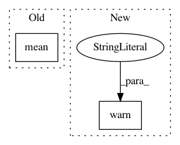

85185175f356697f4a91feacaed2d3a9d70af95f,metric_learn/rca.py,RCA,fit,#RCA#Any#Any#,92
Before Change
X_t = pca.fit_transform(X)
M_pca = pca.components_
else:
X_t = X - X.mean(axis=0)
M_pca = None
chunk_mask, chunked_data = _chunk_mean_centering(X_t, chunks)
After Change
X, chunks = self._prepare_inputs(X, chunks, ensure_min_samples=2)
warnings.warn(
"RCA will no longer center the data before training. If you want "
"to do some preprocessing, you should do it manually (you can also "
"use an `sklearn.pipeline.Pipeline` for instance). This warning "
"will disappear in version 0.6.0.", ChangedBehaviorWarning)
chunks = np.asanyarray(chunks, dtype=int)
chunk_mask, chunked_data = _chunk_mean_centering(X, chunks)
In pattern: SUPERPATTERN
Frequency: 3
Non-data size: 2
Instances
Project Name: metric-learn/metric-learn
Commit Name: 85185175f356697f4a91feacaed2d3a9d70af95f
Time: 2019-06-12
Author: 31916524+wdevazelhes@users.noreply.github.com
File Name: metric_learn/rca.py
Class Name: RCA
Method Name: fit
Project Name: scikit-image/scikit-image
Commit Name: 88e8eb9b549e6da025ed5794aa79c5c75de554e3
Time: 2019-07-21
Author: rba.eos@gmail.com
File Name: skimage/measure/simple_metrics.py
Class Name:
Method Name: compare_nrmse
Project Name: scikit-image/scikit-image
Commit Name: 88e8eb9b549e6da025ed5794aa79c5c75de554e3
Time: 2019-07-21
Author: rba.eos@gmail.com
File Name: skimage/measure/simple_metrics.py
Class Name:
Method Name: compare_mse